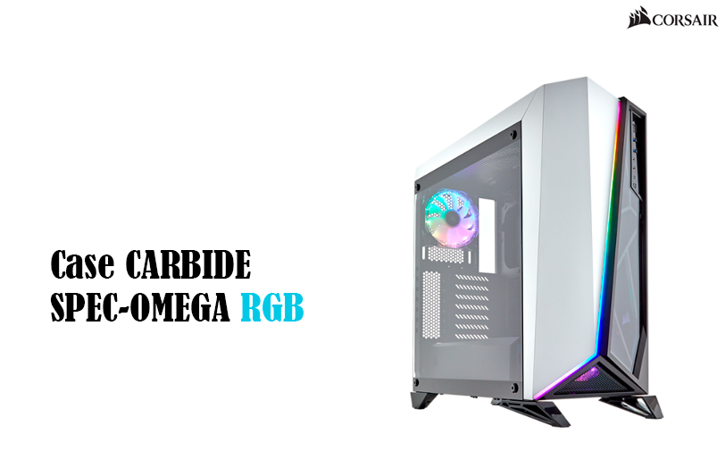

|  |
detalles del producto
CASE CORSAIR CARBIDE SPEC OMEGA RGB BLANCO SIN FUENTE CC-9011141-WW
Precio normal Q1,297.00
Beneficio Efectivo Q1,245.00
Precio de oferta Q1.190.00(aplica solo efectivo)
garantia 12 Meses
Codigo: CAS-COR-CAOMR41
Productos parecidos a COMPU-CASES
|
especificaciones
CASE CORSAIR CARBIDE SPEC OMEGA RGB BLANCO
EL ÚLTIMO CASE DE ESPECIFICACIONES CON UN ESTILO INIGUALABLE
El diseño asimétrico y angular y una tira de luz RGB integrada le dan un aspecto audaz, único y moderno.
OPCIONES DE ENFRIAMIENTO VERSÁTIL
Espacio para hasta seis ventiladores de 120 mm, o hasta un enfriador
Hydro Series de 360 mm en la parte delantera, 240 mm en la parte superior y 120 mm en la parte trasera. |